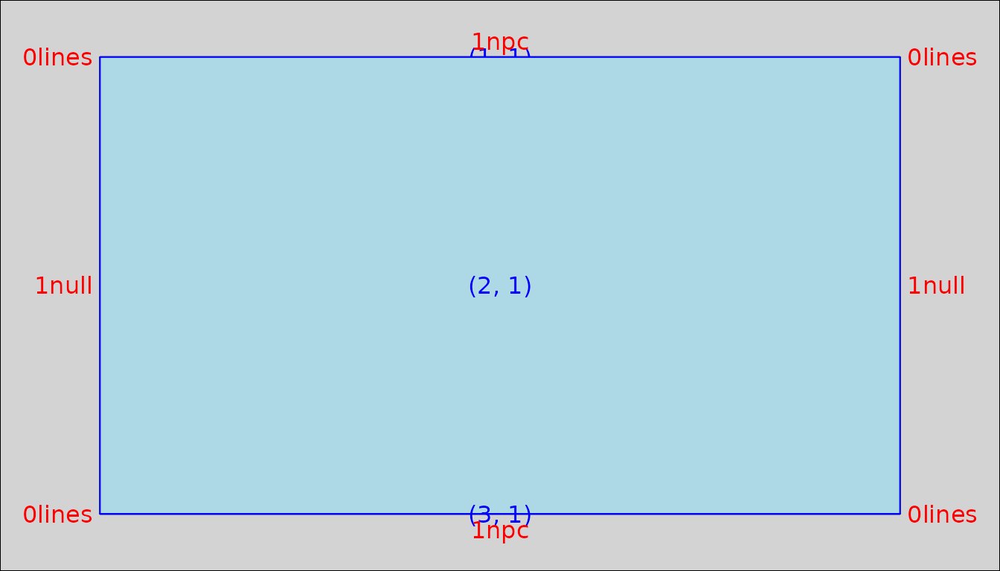
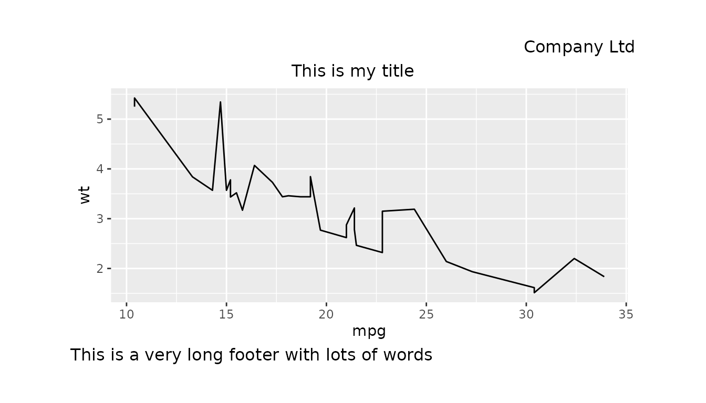
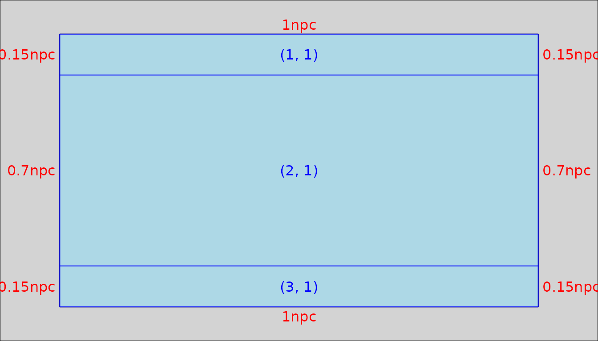
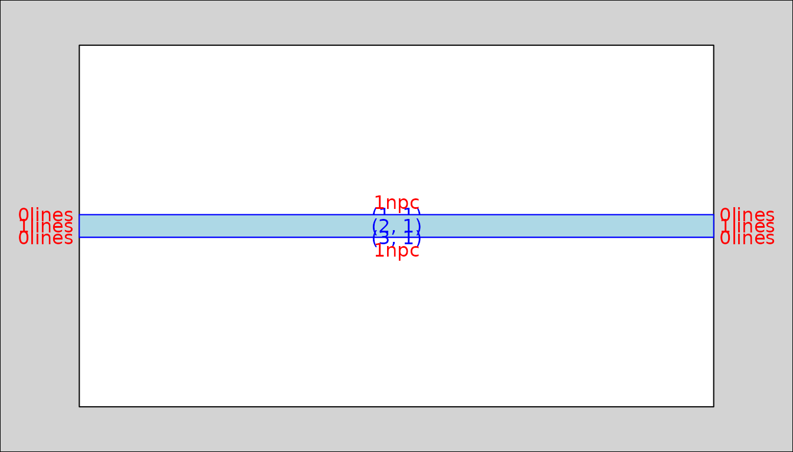
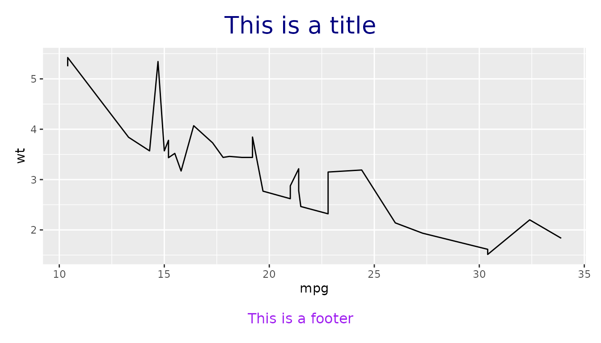
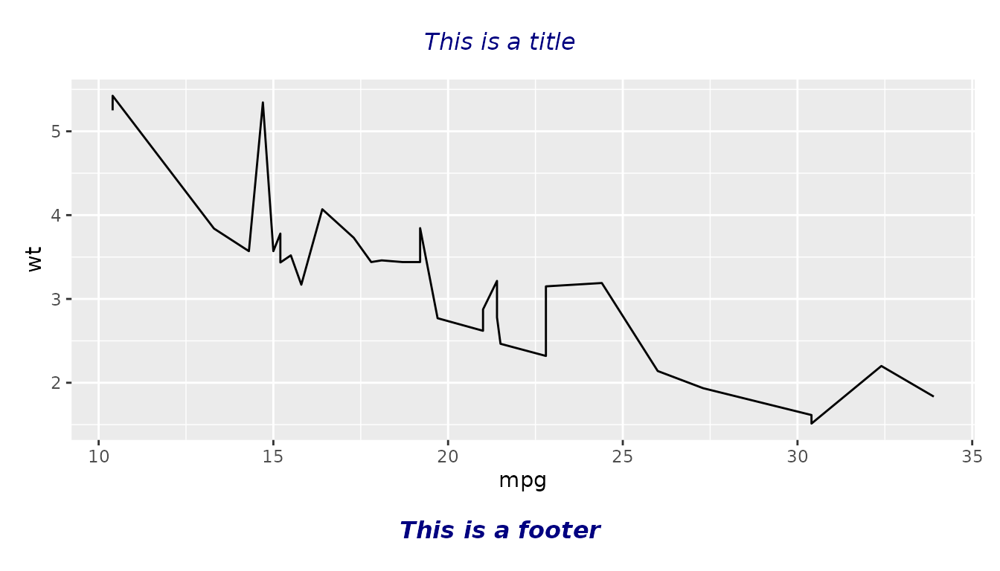
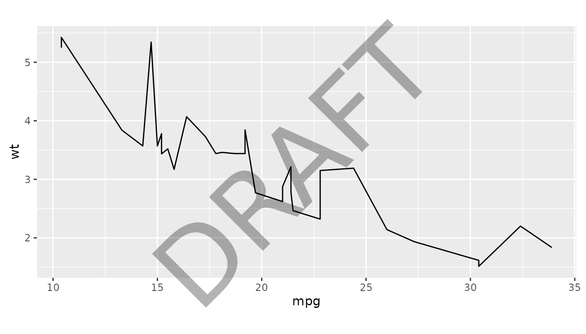

This vignette shows you how to create custom layouts for adding
titles, subtitles, footnotes, and other text elements around outputs
using the gridifyLayout() function.
Please note that creating a custom layout may not be required. It is
intended for more substantial changes or when adjustments are being
applied in an identical way across multiple objects and projects. For
minor one-off adjustments please see help(set_cell) for
more information.
A layout is a grid structure defined by the number of rows and columns which creates spaces or cells where text elements can then be added. Each cell is then defined by the rows and columns it spans.
library(gridify)
# (to use |> version 4.1.0 of R is required, for lower versions we recommend %>% from magrittr)
library(magrittr)
# In the simple_layout there are three rows and one column
# creating a grid of three cells vertically.
show_layout(simple_layout())
Here is an example layout. All arguments will be explained below.
new_layout <- gridifyLayout(
nrow = 4L,
ncol = 2L,
heights = grid::unit(c(1, 1, 1, 0.05), c("lines", "lines", "null", "npc")),
widths = grid::unit(c(0.5, 0.5), "npc"),
margin = grid::unit(c(t = 0.1, r = 0.1, b = 0.1, l = 0.1), units = "npc"),
global_gpar = grid::gpar(),
adjust_height = FALSE,
object = gridifyObject(row = 3, col = 1:2),
cells = gridifyCells(
company = gridifyCell(row = 1, col = 2, x = 1, hjust = 1, y = 1, vjust = 1),
title = gridifyCell(row = 2, col = 1, x = 1, hjust = 0.5),
footer = gridifyCell(row = 4, col = 1, x = 0, hjust = 0)
)
)
gridify(
object = ggplot2::ggplot(data = mtcars, ggplot2::aes(x = mpg, y = wt)) +
ggplot2::geom_line(),
layout = new_layout
) %>%
set_cell("company", "Company Ltd") %>%
set_cell("title", "This is my title") %>%
set_cell("footer", "This is a very long footer with lots of words")
The nrow and ncol arguments are the number
of rows and columns in the layout. They define the grid structure for
the layout.
When thinking about the number of rows and columns required, an empty
row/column should not be included for a margin space
around the border. The margin is defined in another argument,
margin. See more details below.
Each row and column needs to have the heights and widths,
respectively, set to provide the size of the various cells. The heights
and widths need to be a call to grid::unit() containing
elements equal to the number of rows/columns in the layout.
Widths would typically take the unit npc (Normalised Parent Coordinates) to be able to take up a percentage of the whole space rather than a specific width in cm, mm or inches. However, any other unit is also a valid entry.
Heights can be more challenging, depending on what is required in the layout. Here is a quick summary of why each type of unit can be useful for the heights:
When setting the heights of the rows in the layout, ensure to allocate enough height to the object cell row, as the object within the annotated output might not be visible at smaller sizes.
The adjust_height argument can be used to prevent the
text elements from overlapping each other when they are bigger than the
height of the row they are in. This is done by changing the height of
the row dynamically depending on the space the text element will take
up. Please note that this argument will not affect any
row with a unit of npc as then the row height is not defined by a
measurement but a percentage of available height.
The layout needs to have a margin defined to determine how much space there should be around the output. This is a separate argument so does not need to be considered when defining the number of rows and columns for the text element.
The margin must be a call to grid::unit(...) where a
vector with arguments t, r, b and
l are given values, this is for the top, right, bottom and
left margins respectively e.g.
The object’s location is defined in the object argument
of gridifyLayout(). It must be a call to
gridifyObject() specifying the rows and columns the object
should span within the layout.
The arguments height and width of
gridifyObject() determine how much of the space the object
should take up within the cell(s) location. The default values are
1, which is the equivalent of 100% of the width/height of
the area.
# an object that spans only row 3 but both columns 1 and 2
gridifyObject(row = 3, col = 1:2)The scales argument is seen in the predefined layouts
simple_layout() and complex_layout(). It is an
option that lets users select different layout configurations by
adjusting the scale settings. However it is not an argument to the
function gridifyLayout(), it is custom made in the wrapper
layout functions and so would need to be custom made by the user.
For transparency, this section will explain how the
scales argument works, and below, it will demonstrate how
to add it to a custom layout.
In the predefined simple and complex layouts, you can choose between
"free" and "fixed" scales. When using
"free" scales, row heights are proportionally 15%, 70% and
15% of the total area. Conversely, with "fixed" scales, row
heights are determined by the number of lines required for each text
element, with any remaining space allocated to the object.
simple_layout(scales = "free")
#> gridifyLayout object
#> ---------------------
#> Layout dimensions:
#> Number of rows: 3
#> Number of columns: 1
#>
#> Heights of rows:
#> Row 1: 0.15 npc
#> Row 2: 0.7 npc
#> Row 3: 0.15 npc
#>
#> Widths of columns:
#> Column 1: 1 npc
#>
#> Object Position:
#> Row: 2
#> Col: 1
#> Width: 1
#> Height: 1
#>
#> Object Row Heights:
#> Row 2: 0.7 npc
#>
#> Margin:
#> Top: 0.1 npc
#> Right: 0.1 npc
#> Bottom: 0.1 npc
#> Left: 0.1 npc
#>
#> Global graphical parameters:
#> Are not set
#>
#> Default Cell Info:
#> title:
#> row:1, col:1, text:NULL, mch:Inf, x:0.5, y:0.5, hjust:0.5, vjust:0.5, rot:0,
#> footer:
#> row:3, col:1, text:NULL, mch:Inf, x:0.5, y:0.5, hjust:0.5, vjust:0.5, rot:0,
show_layout(simple_layout(scales = "free"))
simple_layout(scales = "fixed")
#> gridifyLayout object
#> ---------------------
#> Layout dimensions:
#> Number of rows: 3
#> Number of columns: 1
#>
#> Heights of rows:
#> Row 1: 0 lines
#> Row 2: 1 null
#> Row 3: 0 lines
#>
#> Widths of columns:
#> Column 1: 1 npc
#>
#> Object Position:
#> Row: 2
#> Col: 1
#> Width: 1
#> Height: 1
#>
#> Object Row Heights:
#> Row 2: 1 null
#>
#> Margin:
#> Top: 0.1 npc
#> Right: 0.1 npc
#> Bottom: 0.1 npc
#> Left: 0.1 npc
#>
#> Global graphical parameters:
#> Are not set
#>
#> Default Cell Info:
#> title:
#> row:1, col:1, text:NULL, mch:Inf, x:0.5, y:0.5, hjust:0.5, vjust:0.5, rot:0,
#> footer:
#> row:3, col:1, text:NULL, mch:Inf, x:0.5, y:0.5, hjust:0.5, vjust:0.5, rot:0,
# As no lines were defined, the object takes up the whole space below
show_layout(simple_layout(scales = "fixed"))Below is an example of how to add scales to a custom layout with
options being npc or lines.
scales_example_layout <- function(
margin = grid::unit(c(t = 0.1, r = 0.1, b = 0.1, l = 0.1), units = "npc"),
global_gpar = grid::gpar(),
scales = c("npc", "lines")) {
scales <- match.arg(scales, c("npc", "lines"))
heights <- if (scales == "npc") {
grid::unit(c(0.15, 0.7, 0.15), "npc")
} else {
grid::unit(c(0, 1, 0), "lines")
}
gridifyLayout(
nrow = 3L,
ncol = 1L,
heights = heights,
widths = grid::unit(1, "npc"),
margin = margin,
global_gpar = global_gpar,
adjust_height = TRUE,
object = gridifyObject(row = 2, col = 1),
cells = gridifyCells(
title = gridifyCell(row = 1, col = 1),
footer = gridifyCell(row = 3, col = 1)
)
)
}
scales_example_layout(scales = "npc")
#> gridifyLayout object
#> ---------------------
#> Layout dimensions:
#> Number of rows: 3
#> Number of columns: 1
#>
#> Heights of rows:
#> Row 1: 0.15 npc
#> Row 2: 0.7 npc
#> Row 3: 0.15 npc
#>
#> Widths of columns:
#> Column 1: 1 npc
#>
#> Object Position:
#> Row: 2
#> Col: 1
#> Width: 1
#> Height: 1
#>
#> Object Row Heights:
#> Row 2: 0.7 npc
#>
#> Margin:
#> Top: 0.1 npc
#> Right: 0.1 npc
#> Bottom: 0.1 npc
#> Left: 0.1 npc
#>
#> Global graphical parameters:
#> Are not set
#>
#> Default Cell Info:
#> title:
#> row:1, col:1, text:NULL, mch:Inf, x:0.5, y:0.5, hjust:0.5, vjust:0.5, rot:0,
#> footer:
#> row:3, col:1, text:NULL, mch:Inf, x:0.5, y:0.5, hjust:0.5, vjust:0.5, rot:0,
show_layout(scales_example_layout(scales = "npc"))
scales_example_layout(scales = "lines")
#> gridifyLayout object
#> ---------------------
#> Layout dimensions:
#> Number of rows: 3
#> Number of columns: 1
#>
#> Heights of rows:
#> Row 1: 0 lines
#> Row 2: 1 lines
#> Row 3: 0 lines
#>
#> Widths of columns:
#> Column 1: 1 npc
#>
#> Object Position:
#> Row: 2
#> Col: 1
#> Width: 1
#> Height: 1
#>
#> Object Row Heights:
#> Row 2: 1 lines
#>
#> Margin:
#> Top: 0.1 npc
#> Right: 0.1 npc
#> Bottom: 0.1 npc
#> Left: 0.1 npc
#>
#> Global graphical parameters:
#> Are not set
#>
#> Default Cell Info:
#> title:
#> row:1, col:1, text:NULL, mch:Inf, x:0.5, y:0.5, hjust:0.5, vjust:0.5, rot:0,
#> footer:
#> row:3, col:1, text:NULL, mch:Inf, x:0.5, y:0.5, hjust:0.5, vjust:0.5, rot:0,
show_layout(scales_example_layout(scales = "lines"))
As you can see from the above example, the show_layout()
function doesn’t always show the complete picture. This is especially
visible when lines are set to have a height of 0 and space
is only given to them when a text element is assigned to it.
Now that the grid has been specified with the heights and widths of the rows and columns, and the object has been placed in the correct cell, the remaining cells can be added.
The cells are the places a user can add their text elements to the output. If a cell doesn’t exist in the layout then a text element can never be placed there by the user.
The cells are created by making a call to gridifyCells()
which requires named arguments returning calls to
gridifyCell(). The names of these arguments are the names
the user will be referencing when adding text elements to the output so
make sure they are named appropriately.
gridifyCells(
company = gridifyCell(row = 1, col = 2, x = 1, hjust = 1, y = 1, vjust = 1),
title = gridifyCell(row = 2, col = 1, x = 1, hjust = 0.5),
footer = gridifyCell(row = 4, col = 1, x = 0, hjust = 0)
)The row and column locations of the cell are defined in the call to
gridifyCell() along with other possible arguments like the
graphical parameters and the alignment of the text in the cell. See
?gridifyCell for more details.
The row and col arguments of
gridifyCell() can be set as a value, sequence or span.
Here are some examples to help explain how these arguments can be
set. Replace row with col if spanning across
columns:
row = 3 - the cell is only positioned in the 3rd
rowrow = 2:4 - the cell is positioned across rows 2, 3 and
4row = c(1, 3) - the cell is positioned across rows 1, 2
and 3There are four arguments in gridifyCell() which define
the alignment of the text within the cell: x,
y, hjust and vjust. They are used
in pairs x and hjust, y and
vjust to define the point on the graph and the point in the
text, respectively, where the text elements should be. x
and hjust work on the horizontal and y and
vjust work on the vertical.
Imagine pinning a piece of paper to a board; the pin has to go
through the paper and the board. The
hjust/vjust value is the point where the pin
goes though the paper and x/y is where the pin
hits the board. They all take values between 0 and 1, with a default of
0.5.
Here are some examples to help explain how the alignment works.
Replace x with y and hjust with
vjust if working in the vertical direction:
x = 0, hjust = 0 - the left side of the text is on the
left of the cellx = 0.5, hjust = 0 - the left side of the text is in
the middle of the cellx = 1, hjust = 1 - the right side of the text is on the
right side of the cellx = 0.8, hjust = 1 - the right side of the text is 20%
in from the right side of the cellPlease use the mch argument of
gridifyCell() to control the maximum number of characters
per line. In many cases, the output dimensions and font size may not be
known in advance, making it difficult to predict an appropriate value
for mch. The end user can specify the mch
argument in the set_cell() function, or alternatively,
provide text with newline characters already included.
The graphical parameters can be set at a global level in the argument
global_gpar of the gridifyLayout() function.
They can also be set at a cell level in the argument gpar
of the gridifyCell() function.
Order of precedence for the graphical parameters is:
local > default > global
set_cell(..., gpar) >
gridifyCell(..., gpar) >
gridifyLayout(..., global_gpar)
Therefore, any graphical parameter can be overwritten by the users in
the calls to set_cell().
new_layout <- gridifyLayout(
nrow = 3L,
ncol = 1L,
heights = grid::unit(c(0.1, 0.8, 0.1), "npc"),
widths = grid::unit(1, "npc"),
margin = grid::unit(c(t = 0.1, r = 0.1, b = 0.1, l = 0.1), units = "inches"),
# default graphics for whole output set in global_gpar
global_gpar = grid::gpar(fontfamiy = "Courier", col = "navy"),
adjust_height = FALSE,
object = gridifyObject(row = 2, col = 1),
cells = gridifyCells(
# default graphics for title cell here:
title = gridifyCell(row = 1, col = 1, gpar = grid::gpar(fontsize = 20)),
footer = gridifyCell(row = 3, col = 1)
)
)
gridify(
object = ggplot2::ggplot(data = mtcars, ggplot2::aes(x = mpg, y = wt)) +
ggplot2::geom_line(),
layout = new_layout
) %>%
set_cell("title", "This is a title") %>%
# graphics specs can be overwritten in set_cell
set_cell("footer", "This is a footer", gpar = grid::gpar(col = "purple"))
The text element fonts can also be customized easily as per the user requirements.
new_layout <- gridifyLayout(
nrow = 3L,
ncol = 1L,
heights = grid::unit(c(0.1, 0.8, 0.1), "npc"),
widths = grid::unit(1, "npc"),
margin = grid::unit(c(t = 0.1, r = 0.1, b = 0.1, l = 0.1), units = "inches"),
global_gpar = grid::gpar(
fontfamiy = "Courier",
col = "navy",
fontface = "italic"
), # default italic text for the whole output
adjust_height = FALSE,
object = gridifyObject(row = 2, col = 1),
cells = gridifyCells(
title = gridifyCell(row = 1, col = 1),
footer = gridifyCell(row = 3, col = 1)
)
)
# overwriting the default fontface in the footer cell in the call to set_cell
# so the footer will now have bold and italic instead of the default italic
gridify(
object = ggplot2::ggplot(data = mtcars, ggplot2::aes(x = mpg, y = wt)) +
ggplot2::geom_line(),
layout = new_layout
) %>%
set_cell("title", "This is a title") %>%
set_cell("footer", "This is a footer", gpar = grid::gpar(fontface = "bold.italic"))
The text argument of gridifyCell() can be
used to set the default text for a cell. Please note, the text provided
by the end user with set_cell() will take higher priority
and overwrite the default.
new_layout <- gridifyLayout(
nrow = 4L,
ncol = 2L,
heights = grid::unit(c(1, 1, 1, 0.05), c("lines", "lines", "null", "npc")),
widths = grid::unit(c(0.5, 0.5), "npc"),
margin = grid::unit(c(t = 0.1, r = 0.1, b = 0.1, l = 0.1), units = "npc"),
global_gpar = grid::gpar(),
adjust_height = FALSE,
object = gridifyObject(row = 3, col = 1:2),
cells = gridifyCells(
company = gridifyCell(row = 1, col = 2, x = 1, hjust = 1, y = 1, vjust = 1),
title = gridifyCell(row = 2, col = 1, text = "Default Title", x = 1, hjust = 0.5),
footer = gridifyCell(row = 4, col = 1, x = 0, hjust = 0)
)
)
gridify(
object = ggplot2::ggplot(data = mtcars, ggplot2::aes(x = mpg, y = wt)) +
ggplot2::geom_line(),
layout = new_layout
) %>%
set_cell("company", "Company Ltd") %>%
set_cell("footer", "This is a very long footer with lots of words")
#> gridifyClass object
#> ---------------------
#> Please run `show_spec(object)` or print the layout to get more specs.
#>
#> Cells:
#> company: filled
#> title: filled
#> footer: filledTo add a watermark to your output, create a cell covering the desired rows and columns and set the transparency of the text, the font size large and the rotation to 45 degrees.
new_layout <- gridifyLayout(
nrow = 3L,
ncol = 1L,
heights = grid::unit(c(0.05, 0.9, 0.05), "npc"),
widths = grid::unit(1, "npc"),
margin = grid::unit(c(t = 0.1, r = 0.1, b = 0.1, l = 0.1), units = "cm"),
global_gpar = grid::gpar(),
adjust_height = FALSE,
object = gridifyObject(row = 2, col = 1),
cells = gridifyCells(
title = gridifyCell(row = 1, col = 1),
footer = gridifyCell(row = 3, col = 1),
watermark = gridifyCell(row = 1:3, col = 1, rot = 45, gpar = grid::gpar(fontsize = 90, alpha = 0.3))
)
)
#> Warning in validityMethod(object): Overlapping cells detected at positions:
#> 1-1, 3-1
gridify(
object = ggplot2::ggplot(data = mtcars, ggplot2::aes(x = mpg, y = wt)) +
ggplot2::geom_line(),
layout = new_layout
) %>%
set_cell("watermark", "DRAFT")